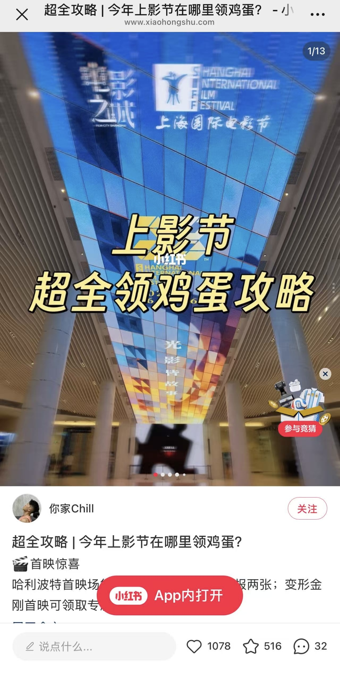
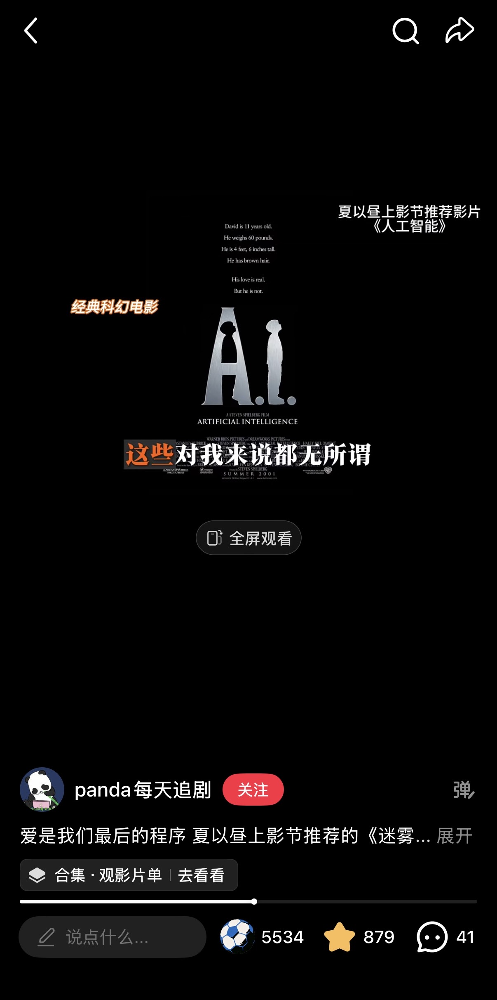

XIJIN TENG
靠谱的INTJ 有感知力的storyteller
Enter the WorldObject . Mind
M.U.S.T.
工商管理 - 市场营销 学士
主修品牌管理、消费者行为、营销调研等，奠定扎实的商业策略思维与项目统筹基础。
NYU
整合营销 - 市场分析 硕士
主修数字营销、数据库管理、商业分析与数据可视化、战略管理等。以理性的数据分析拆解市场，寻找精准定位。
上海国际电影节 × 大麦 APP
新媒体运营 | 看完不说憋得慌｜2026.06
负责多渠道（小红书/公众号/微博/抖音）的内容运营与评论维护。任期内高频产出 20 余篇小红书笔记，其中 8 篇赞藏破百，2 篇赞藏破千，有效驱动平台流量与话题转化。
View Data Evidence⬇ CLICK THE RIGHT IMAGE TO VIEW ON XIAOHONGSHU


FIRST 青年电影展
品牌助理实习生 | 2025.08 - 2026.01
全程参与「FIRST惊喜影展」对接比亚迪、东边野兽、海信等商务需求。深度参与「青年手机电影计划」，在高压环境下确保影视项目与商业权益平稳落地。
SHEIN & 蔚蓝视界
HR实习生 ｜ 文案策划 | 2021 - 2022
处理招聘数据流，优化组织透明度；负责《星汉灿烂》剧集的社媒文案与舆情监测，单平台获赞破 30w+，以数据指导内容运营。
优酷·七猫影业·蟠桃计划
IP 改编组 | 2024.07 - 2024.10
拆解 18 个影视 IP，分析市场趋势与受众，主导《大宋审死官》的影视化改编方案。在剧本创作中寻找艺术性与商业性的精准平衡点。
快看漫画条漫大赛
最佳脑洞奖 | 2021.08 - 2021.11
独立结合虚拟现实设定完成故事大纲，作品荣获“最佳脑洞奖”。导演黎志评价：“VR的虚拟设定契合当下热点，故事类型感鲜明。”
北京国际电影节 / 纽约国际电影节
官方志愿者 | 2022.08 & 2024.10
先后参与第12届北京国际电影节与第62届纽约电影节。负责红毯嘉宾接待、现场秩序维护及商品团队的统筹协作，在热爱中近距离支持影像艺术。